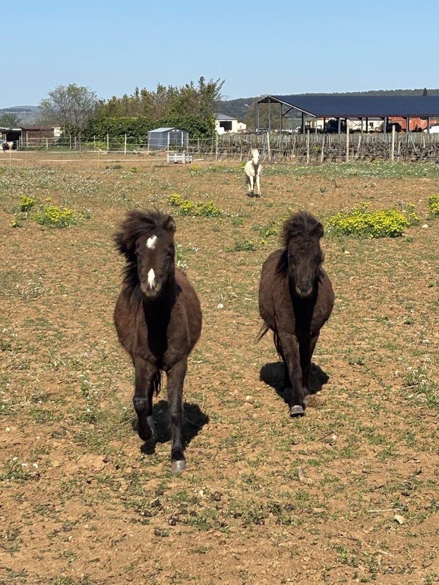
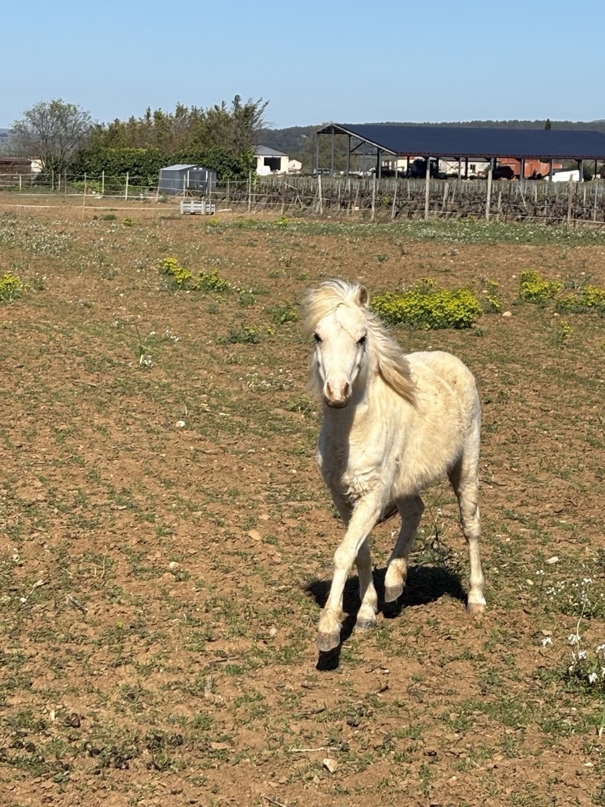
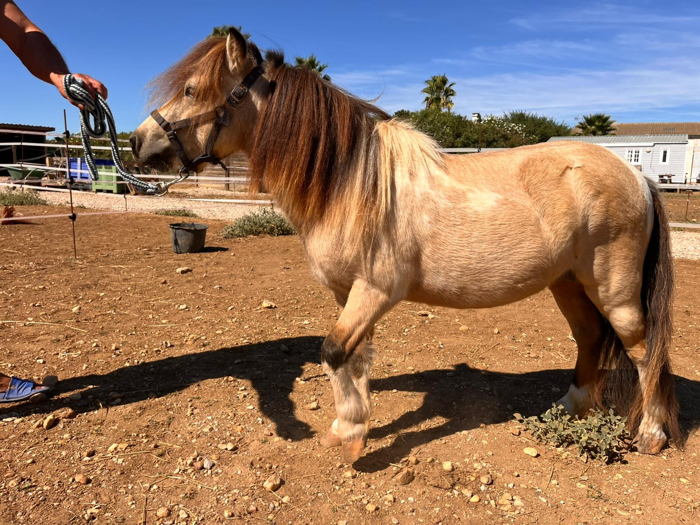

Du Braque de Weimar au Cheval Miniature Américain, notre engagement reste le même : la sélection du beau, du bon et du sain.
Bienvenue à l'Arche du Négadis. Notre histoire est celle d'une passion familiale ancrée dans le respect de la nature et de la vie animale. Fondé sur les mêmes valeurs que notre élevage de Braques de Weimar, notre domaine à Paulhan est devenu le berceau d'une sélection rigoureuse de Mini Chevaux Américains.
Pour nous, élever n'est pas simplement multiplier. C'est un engagement de chaque instant pour préserver et améliorer une race. Que ce soit pour nos chiens ou nos chevaux, nous appliquons une philosophie stricte : une génétique de pointe, une santé irréprochable et un équilibre mental parfait.

Comme pour nos chiens, chaque étalon miniature et chaque jument de l'Arche du Négadis est choisi pour son excellence. Nous ne faisons aucune concession sur le standard AMHA (American Miniature Horse Association).
Tous nos reproducteurs sont testés pour les variants génétiques (tests ACAN) afin d'assurer que nos poulains miniatures naissent dans les meilleures conditions. La transparence génétique est non négociable.
Un cheval miniature doit rester un compagnon proche de l'homme. Nous accordons une importance capitale à la socialisation précoce et à l'éducation douce, dès les premières heures de vie du poulain.
Nous recherchons l'harmonie parfaite d'un cheval de sang, à échelle réduite. Profil, port de tête, aplombs, robe — chaque détail contribue à l'excellence d'ensemble que nous visons dans chaque poulain produit.

Nos chevaux vivent au grand air, dans le cadre privilégié de notre domaine de Paulhan. Cette vie en troupeau, respectueuse de leurs besoins physiologiques, est la clé de leur équilibre.
L'Arche du Négadis est un lieu d'accueil et de partage. Entre nos parcs à chevaux et nos gîtes de charme, nous vous invitons à découvrir un univers où le temps s'arrête, dédié à l'amour des animaux et à la beauté des paysages occitans.
Acquérir un cheval à l'Arche du Négadis, c'est entrer dans une communauté de passionnés. Nous mettons un point d'honneur à vous conseiller avec transparence.

Visitez l'élevage sur rendez-vous, rencontrez nos reproducteurs et vivez l'expérience de l'Arche du Négadis au cœur de la garrigue héraultaise.